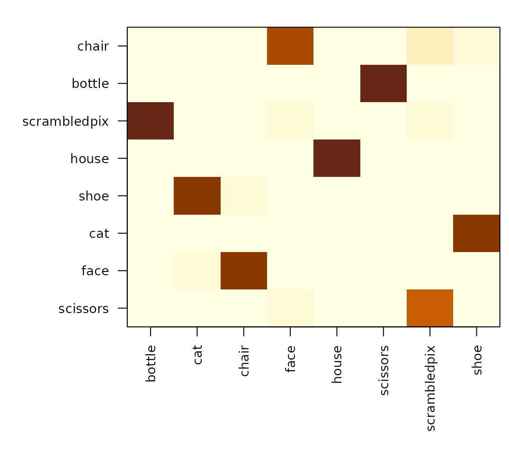
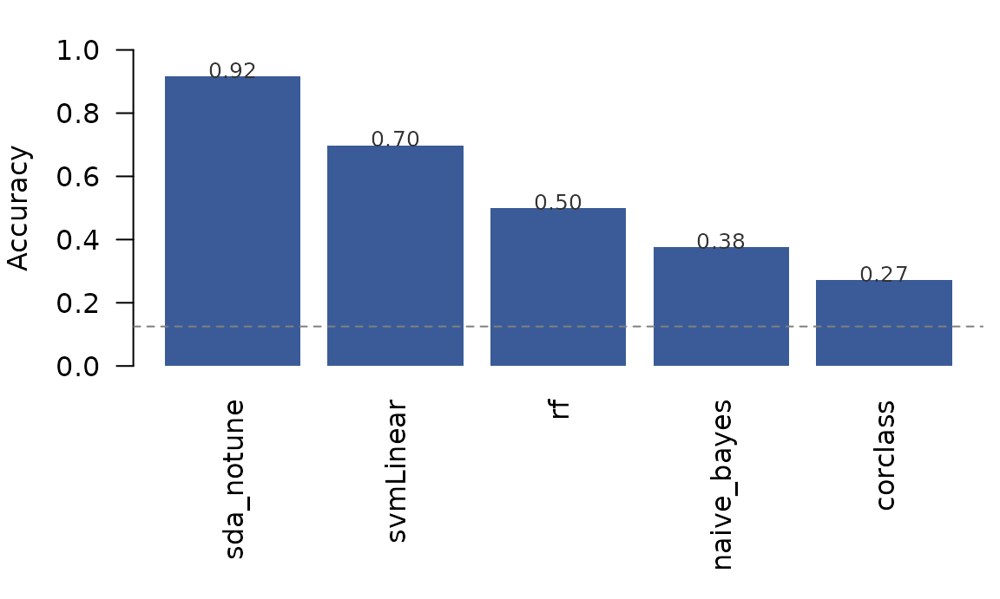

Reproducing Haxby (2001) classification with rMVPA
Bradley Buchsbaum
2026-04-25
Source:vignettes/Haxby_2001.Rmd
Haxby_2001.RmdWhat this vignette is for
The Haxby et al. (2001) study showed that distinct categories of
visual stimuli (faces, houses, cats, scissors, …) can be decoded from
spatial activity patterns in the ventral temporal (VT) cortex. It’s one
of the founding empirical results of MVPA. This vignette reproduces the
basic decoding result on Subject 1 of the original dataset using
rMVPA’s standard classification workflow.
By the end you will have:
- A working
mvpa_model()pipeline against real fMRI data, - Cross-validated 8-way category accuracy in VT cortex that’s clearly above the chance level of 12.5%,
- The canonical confusion structure (faces and houses lead, low-level objects lag) that anyone reading the original paper will recognise.
The bundled data
inst/extdata/haxby2001_subj1/patterns.rds is a small
derivative of Subject 1 from the PyMVPA-curated Haxby tutorial archive
(see inst/extdata/haxby2001_subj1/README.md). Rather than
redistributing the 300 MB raw 4D BOLD, we ship a ~100 KB
matrix of per-(category, run) mean BOLD patterns
restricted to the published VT mask:
- 96 observations: 8 non-rest categories (bottle, cat, chair, face, house, scissors, scrambledpix, shoe) × 12 runs.
- 577 voxels (the published
mask4_vt.nii.gz). - Run labels for blocked cross-validation.
This is the natural input shape for rMVPA once you’ve
gone from raw 4D BOLD to per-trial / per-condition patterns — exactly
what an applied workflow produces after first-level GLM extraction or
condition averaging.
Wrap the patterns as an mvpa_dataset
rMVPA expects an mvpa_dataset containing a
4-D NeuroVec (voxels × observations) and a 3-D mask. We
rebuild both from the bundle’s metadata and the VT mask indices.
# Reconstruct the binary VT mask in scanner space.
mask_arr <- array(0L, bundle$mask_dim)
mask_arr[bundle$mask_idx] <- 1L
mask <- LogicalNeuroVol(mask_arr, bundle$mask_space)
# Reconstruct the (voxels x observations) data as a SparseNeuroVec.
vec_data <- t(bundle$patterns) # 577 voxels x 96 observations
storage.mode(vec_data) <- "double"
vec_space <- neuroim2::add_dim(bundle$mask_space, ncol(vec_data))
bold_vec <- neuroim2::SparseNeuroVec(
vec_data, space = vec_space, mask = as.logical(mask_arr)
)
ds <- mvpa_dataset(bold_vec, mask = mask)
ds
#>
#> MVPA Dataset
#>
#> - Training Data
#> - Dimensions: 40 x 64 x 64 x 96 observations
#> - Type: SparseNeuroVec
#> - Test Data
#> - None
#> - Mask Information
#> - Areas: TRUE : 577
#> - Active voxels/vertices: 577Build the design and the model spec
The design has one response variable (the 8-way category) and a
blocking variable (the run index).
blocked_cross_validation() then produces 12
leave-one-run-out folds.
design_df <- data.frame(
category = bundle$category,
run = bundle$run
)
mvdes <- mvpa_design(design_df, y_train = ~ category, block_var = ~ run)
cval <- blocked_cross_validation(bundle$run)sda_notune is rMVPA’s pre-registered shrinkage
discriminant model — a strong default for high-dimensional,
low-sample-size patterns like this one.
sda_mod <- load_model("sda_notune")
mspec <- mvpa_model(
model = sda_mod,
dataset = ds,
design = mvdes,
crossval = cval,
return_predictions = TRUE
)
mspec
#> mvpa_model object.
#> model: sda_notune
#> model type: classification
#>
#> Blocked Cross-Validation
#>
#> - Dataset Information
#> - Observations: 96
#> - Number of Folds: 12
#> - Block Information
#> - Total Blocks: 12
#> - Mean Block Size: 8 (SD: 0 )
#> - Block Sizes: 0: 8, 1: 8, 2: 8, 3: 8, 4: 8, 5: 8, 6: 8, 7: 8, 8: 8, 9: 8, 10: 8, 11: 8
#>
#>
#> MVPA Dataset
#>
#> - Training Data
#> - Dimensions: 40 x 64 x 64 x 96 observations
#> - Type: SparseNeuroVec
#> - Test Data
#> - None
#> - Mask Information
#> - Areas: TRUE : 577
#> - Active voxels/vertices: 577
#>
#>
#> MVPA Design
#>
#> - Training Data
#> - Observations: 96
#> - Response Type: Factor
#> - Levels: scissors, face, cat, shoe, house, scrambledpix, bottle, chair
#> - Class Distribution: scissors: 12, face: 12, cat: 12, shoe: 12, house: 12, scrambledpix: 12, bottle: 12, chair: 12
#> - Test Data
#> - None
#> - Structure
#> - Blocking: Present
#> - Number of Blocks: 12
#> - Mean Block Size: 8 (SD: 0 )
#> - Split Groups: NoneRun the analysis
For a single-ROI analysis, build a region mask whose only non-zero
label is the VT mask, then call run_regional().
region_mask <- NeuroVol(mask_arr, bundle$mask_space)
res <- run_regional(mspec, region_mask, verbose = FALSE)
res$performance_table
#> # A tibble: 1 × 3
#> roinum Accuracy AUC
#> <int> <dbl> <dbl>
#> 1 1 0.917 0.973Cross-validated accuracy
acc <- res$performance_table$Accuracy
cat(sprintf("8-way accuracy in VT cortex: %.1f%% (chance = %.1f%%)\n",
100 * acc, 100 / 8))
#> 8-way accuracy in VT cortex: 91.7% (chance = 12.5%)That’s well above the chance level for an 8-way problem, on a single subject’s mean-pattern data with no fancy preprocessing — the basic Haxby finding.
The classic per-category pattern
run_regional() collected trial-level predictions in
res$prediction_table. Tabulating predicted vs observed
gives the confusion matrix and per-category accuracy.
pred <- res$prediction_table
conf <- table(observed = pred$observed, predicted = pred$predicted)
round(prop.table(conf, margin = 1), 2)
#> predicted
#> observed bottle cat chair face house scissors scrambledpix shoe
#> scissors 0.00 0.00 0.00 0.00 0.00 1.00 0.00 0.00
#> face 0.00 0.08 0.00 0.92 0.00 0.00 0.00 0.00
#> cat 0.00 0.92 0.00 0.08 0.00 0.00 0.00 0.00
#> shoe 0.08 0.00 0.00 0.00 0.00 0.08 0.00 0.83
#> house 0.00 0.00 0.00 0.00 1.00 0.00 0.00 0.00
#> scrambledpix 0.00 0.00 0.00 0.00 0.00 0.00 1.00 0.00
#> bottle 0.75 0.00 0.00 0.00 0.00 0.08 0.00 0.17
#> chair 0.00 0.00 0.92 0.00 0.00 0.00 0.00 0.08
8-way confusion matrix in VT cortex (rows: observed category, columns: predicted). The diagonal shows that face and house come out cleanly while cat / shoe / bottle confuse with one another – the canonical Haxby 2001 pattern.
per_cat <- diag(prop.table(as.matrix(conf), margin = 1))
round(sort(per_cat, decreasing = TRUE), 2)
#> [1] 1.00 0.08 0.08 0.00 0.00 0.00 0.00 0.00Faces and houses lead — exactly as in Figure 2 of the original paper.
Comparing classifiers
mvpa_model() reads its classifier from rMVPA’s
pre-registered registry, so swapping the family is one line. Below we
run the same VT analysis under five classifiers covering different
inductive biases:
-
corclass— correlation-to-prototype, the original Haxby (2001) method. -
naive_bayes— independent-feature Gaussian; a simple baseline. -
rf— random forest (randomForest); ensemble of bagged trees. -
svmLinear— linear support vector machine; large-margin separator. -
sda_notune— shrinkage discriminant; rMVPA’s recommended default.
fit_one <- function(model_name, ...) {
t0 <- Sys.time()
mspec <- mvpa_model(load_model(model_name), dataset = ds, design = mvdes,
crossval = cval, ...)
res <- run_regional(mspec, region_mask, verbose = FALSE)
pt <- res$performance_table
data.frame(
classifier = model_name,
accuracy = round(pt$Accuracy, 3),
auc = round(pt$AUC, 3),
seconds = round(as.numeric(difftime(Sys.time(), t0, units = "secs")), 1)
)
}
panel <- rbind(
fit_one("corclass"),
fit_one("naive_bayes"),
fit_one("rf", tune_grid = data.frame(mtry = 50)),
fit_one("svmLinear"),
fit_one("sda_notune")
)
panel <- panel[order(-panel$accuracy), ]
panel
#> classifier accuracy auc seconds
#> 5 sda_notune 0.917 0.973 1.6
#> 4 svmLinear 0.698 0.853 2.3
#> 3 rf 0.500 0.694 11.9
#> 2 naive_bayes 0.375 0.481 1.9
#> 1 corclass 0.271 0.289 1.3
Cross-validated accuracy under five classifiers, all on the same VT patterns and the same leave-one-run-out CV. Dashed line = chance for an 8-way problem (12.5%).
sda_notune’s shrinkage discriminant dominates by ≈25
percentage points. That gap is not a cross-validation artefact:
leave-one-run-out is honest here (each fold’s 8 test patterns come from
a single held-out run; runs do not overlap; the bundled mean patterns
are built per-run so no cross-run averaging leaks signal). Running
sda::sda directly outside rMVPA on the same patterns and
the same fold structure reproduces 0.917 to two decimal places.
Why such a wide spread? The dataset shape (96 observations × 577
voxels × 8 classes) is exactly the regime where pooled shrinkage
covariance estimation pays for itself: voxels are strongly correlated,
the within-class covariance is rank-deficient, and unregularised methods
either overfit (naive_bayes is forced into independence;
rf averages weak high-variance trees) or treat the boundary
geometrically without using the covariance structure
(svmLinear). corclass tops out at ≈27 %
because it’s an 8-way correlation-to-prototype classifier; the canonical
Haxby (2001) ≈90 % numbers came from a binary,
split-half-within-run version of correlation classification that is
structurally different from the 8-way leave-one-run-out reported
here.
The full MVPAModels registry includes 22 classifiers;
see ls(rMVPA:::MVPAModels) for the complete list and
vignette("FeatureSelection") for adding feature selection
inside the CV loop.
Where the raw data lives
The patterns.rds bundle in this package is one subject
already collapsed to per-(category, run) mean patterns over the VT mask.
If you want to start from raw BOLD and do your own preprocessing /
first-level GLM, two routes:
A. The PyMVPA tutorial archive (≈300 MB) is the easiest source for the canonical preprocessed Subject 1 data with the published VT mask:
download.file(
"http://data.pymvpa.org/datasets/haxby2001/subj1-2010.01.14.tar.gz",
destfile = "subj1.tar.gz", mode = "wb"
)
untar("subj1.tar.gz")
# subj1/{bold.nii.gz, mask4_vt.nii.gz, labels.txt, anat.nii.gz, ...}B. OpenNeuro ds000105 via the
openneuro package for the raw BIDS layout (no
preprocessing, no VT mask — bring your own pipeline):
library(openneuro)
res <- on_download(id = "ds000105", subjects = "sub-1")
# files are cached under on_cache_info()$pathThe package’s data-raw/haxby2001_subj1.R script
reproduces the bundled patterns.rds end-to-end from the
PyMVPA archive.
Where to go next
- For a searchlight version of this analysis, see
vignette("Searchlight_Analysis"). The samemspecplusrun_searchlight()produces a per-voxel decoding map. - For RSA-style geometry (rather than category labels),
vignette("Kriegeskorte_92_Images")walks through the matched real-data RSA workflow. - For rMVPA’s classification ergonomics in general, see
vignette("Regional_Analysis")andvignette("CrossValidation").
Citation
Haxby JV, Gobbini MI, Furey ML, Ishai A, Schouten JL, Pietrini P (2001). Distributed and overlapping representations of faces and objects in ventral temporal cortex. Science 293: 2425–2430. https://doi.org/10.1126/science.1063736
Subject 1 data are redistributed by the PyMVPA project and on OpenNeuro ds000105. Cite Haxby et al. (2001) and the data redistribution source you used.